for my wife fiture ❤️
Dibuat dengan cinta, hanya untuk kamu
mau lanjut atau ga? ❤️
SIAP SIAP SALTING YE ✨
Kita sudah bersama selama:
halo sayang ini bubby hehehehe, behh udah lama ga kasih wish untuk saya hehe jadi bubby buat website ni buat sayang , sayang bilang mau off semaleman kan jadi bubby buatkan la ni website biar terlihat berbeda sedikit ini sebagai penghantar ja hehehe jangan bosan baca ya nanti semoga sayang suka
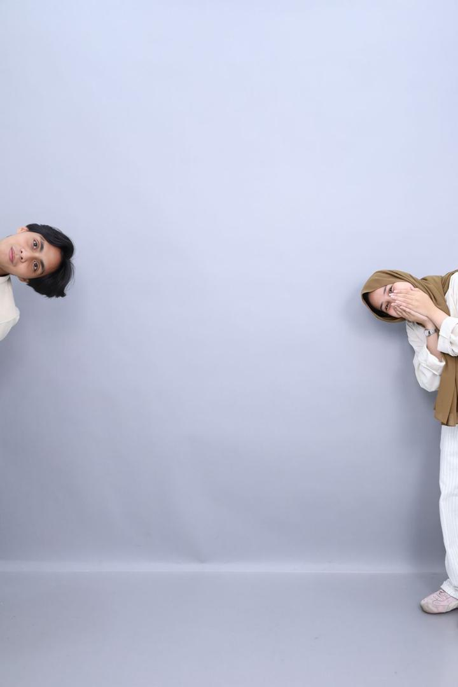
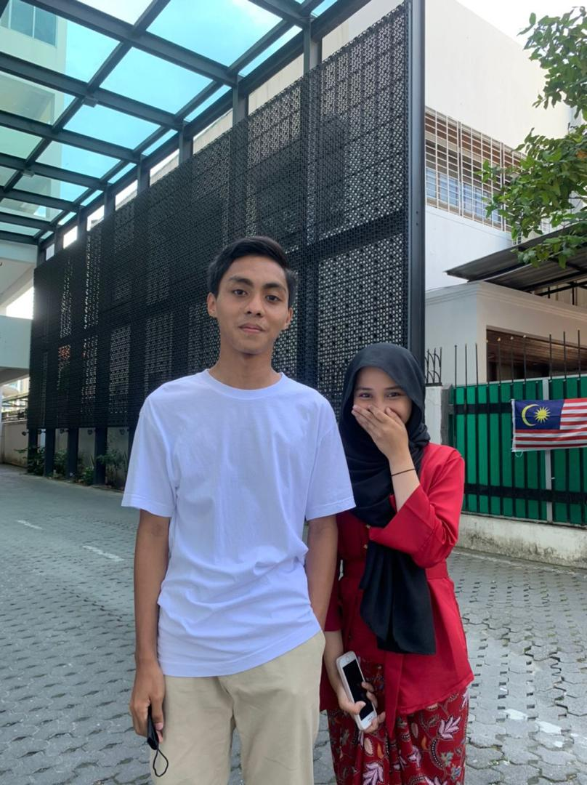
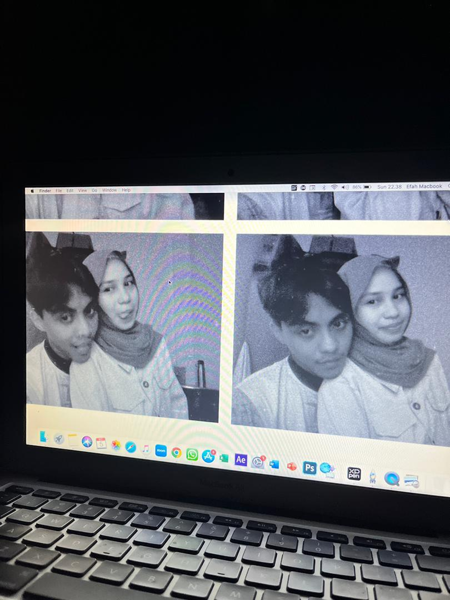
yeyyy udah 3y9m bareng sayang terus HUAHAHAHAHAH, asekkk senang banget sama sayang terus nda ekspek bakal selama ini sama sayang hehee, lucky banget dong bubby dapat sayang sebab bole bertahan selama ini , lagipun pertahankan hubungan selama ini nda senang tau walaupun bubby banyak buat salah jadi bubby nda mau minta maaf di sini sebab nanti minta maaf juga ke sayang hehe, bubby mau bilang makasi banget ke sayang sebab mau bareng bubby terus walaupun bubby tau atau sadar diri nda sehebat dan sekeren cowo diluar sana bubby gatau sayang liat apa dari bubby tapi bubby beneran bersyukur (dalam hati sayang bilang "shit") hehe, bubby beneran niat buat ni website demi sayangg hehe , sayang jangan kemana mana ya walaupun bubby banyak tugas atau apapun itu terus kalau ada apa apa langsung bilang jangan biasakan bilang gapapa sebab itu buat bubby kesel ke sayang kalau gitu sebab sayang macam nutup nutupin bubby , kita buat hubungan ni macam orang orang orang tapi nda sama kita buat hubungan kita sendiri yang lebih keren beda dari orang lain perbaiki sama sama ya sayang kita hadapi bareng bareng terus ya sayang hehehhe Iloyousooomuchhhh sayanggggggggg
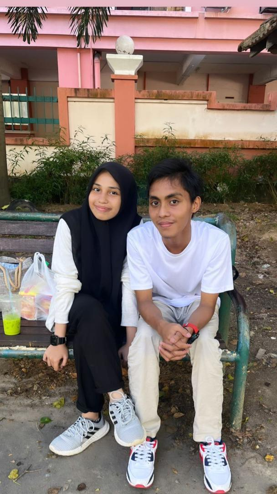
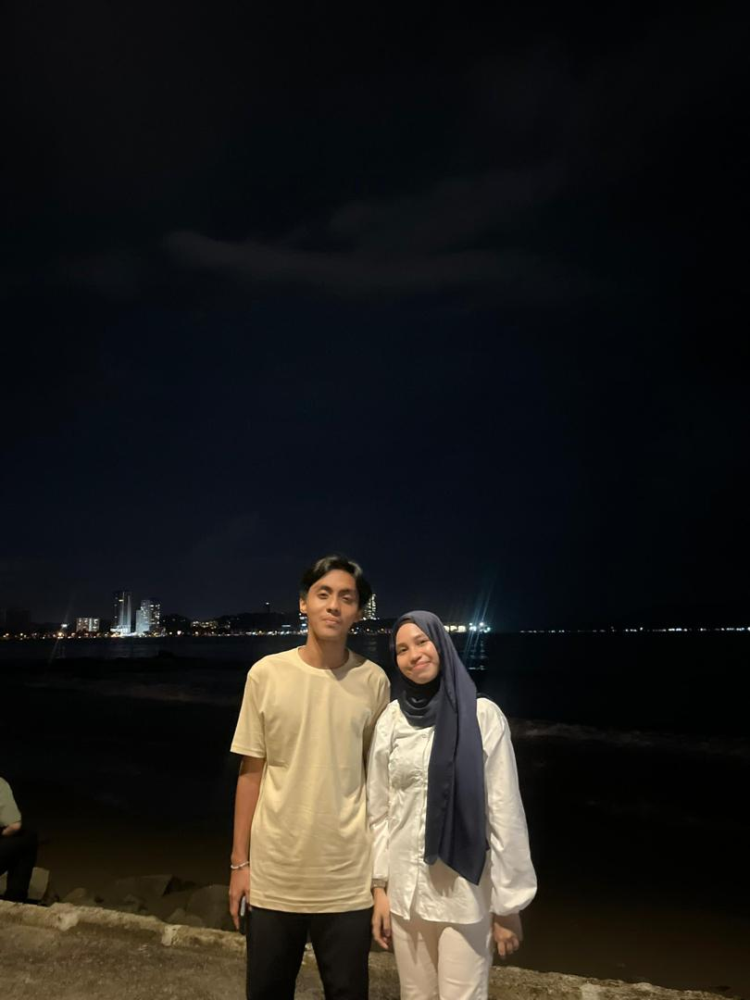
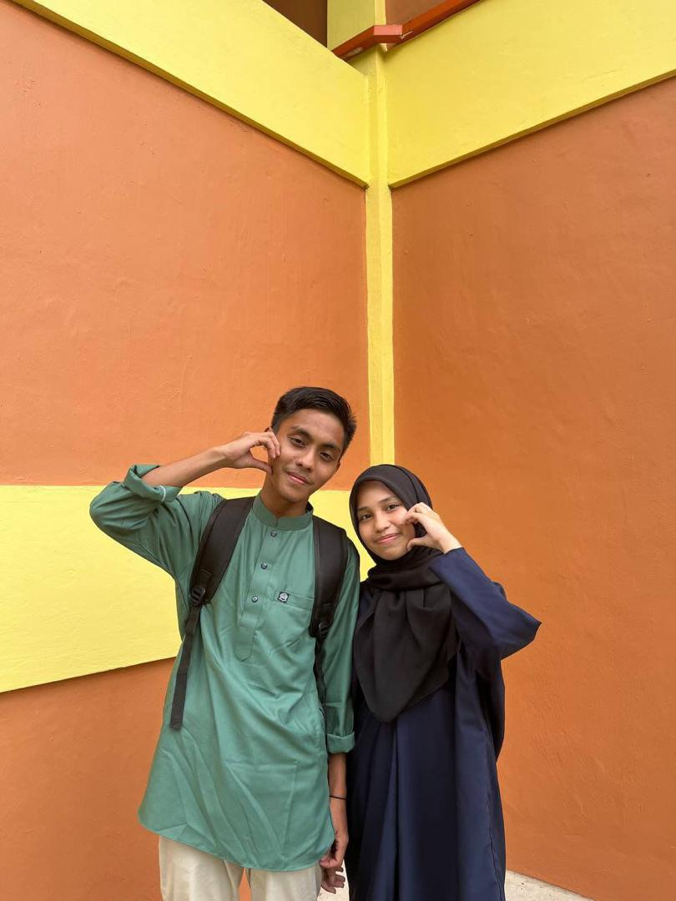
sekkk masi dilanjut ni slide nya HUAAHAHAHA, nah di sini berbeda lagi pembahasanya siap siap baca sayang , okay bubby mau terima kasih banget ke sayang sebab sayang selalu ngertiin bubby walaupun bubby kurang Waktu ke sayang terus sayang selalu ada setiap bubby ada kiwww hehe, bubby terima kasih banget sama sayang sebab banyak hal yang sayang buat tu berdampak banget sama bubby terus banyak hal yang bubby belajar dari sayang , terima kasih juga suda tahan sifat bubby yang begini gatau la gimana caranya mau balas ke sayang kebaikan sayang tu setinggi gunung Kinabalu dan seluas laut pasifik , makasi banget sayang selalu bantu bubby apapun itu mau tugas atau masalah yang selalu , terus sayang belakangan ini selalu belikan barang barang baju Uniqlo bukan murah tu terus kemarin jalan lego lagi dibelikan 2 lagi ish ish ishhh itu bubby seneng bangettt dibeliin itu pas partnya hilang bubby beneran cari 1 kamar takut hilang nanti sayang marah and bubby simpan tu lego di meja bubby atas nanti bubby kasih di sesi foto sehhhhh sayang makasi banget ya udah kenalin bubby ke family sayang bubby gatau mereka gimana ke sayang and bubby walaupun bubby tau suda mama dadi farah and kaka gimana tapi bubby belum tau keluarga sayang yang lain gimana hehe makasi banget ya sayanggg
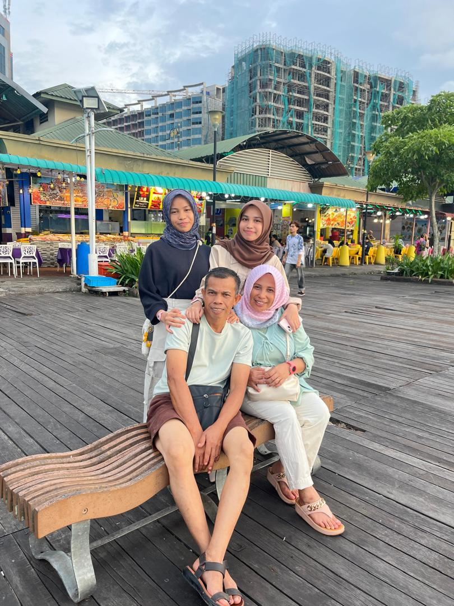
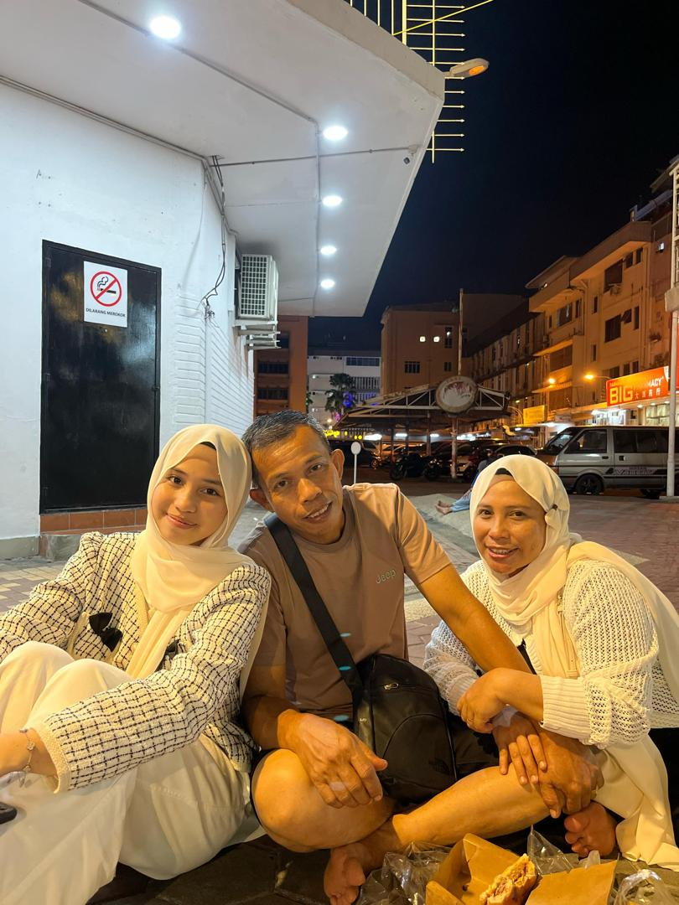
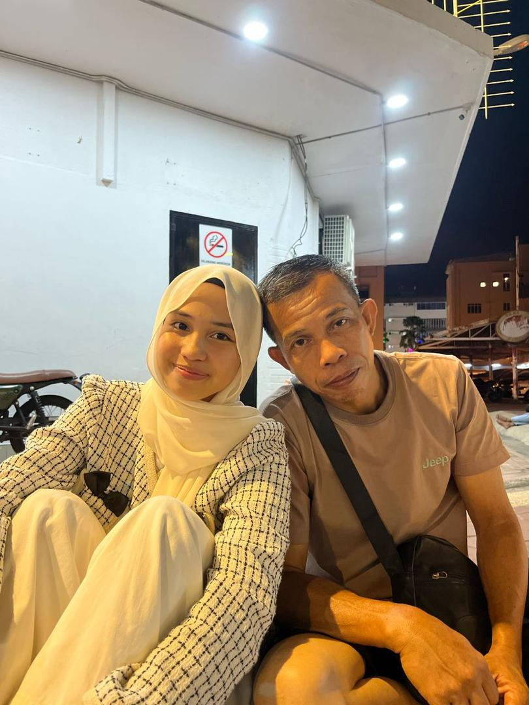
anjayyy masi tahan mau baca ka ni HAHAHAHHA udah slide ke berapa ni okay lanjut shhhhhhh, disini bubby mau minta maaf ke sayang kalau bubby banyak buat salah ke sayang belakangan ini tapi bukan belakangan ini ja tapi setiap jam setiap detik setiap hari setiap bulan dan setiap tahun bubby buat salah terus ke sayang terus 2 kesalahan bubby paling fatal pas udahan sama itu sayang know la cht cwe , bubby beneran minta maaf ke sayang itu bubby ga ada niatan mau tinggalin sayang bubby pun gatau kenapa bubby buat gitu ke sayanggg bubby kadang masi malu sama sayang kalau mau bahas jadi kalau sayang ungkit ungkit bubby emosi sebab mcm malu gamau diungkit terus maybe sayang berat untuk lupakan itu , bubby mau minta maaf sebab bubby kadang ga ada disisi sayang kalau lagi butuh apapun itu kadang bubby fikir bubby kemana aja ngapain aja kenapa bubby ga disitu padahal kalau bubby sayang selalu ada , sayang bubby mau minta maaf juga kalau bubby kurang treat atau kasih sayang sesuatu yang berharga buat sayang sebenarnya banyak yang bubby mau kasih tapi bingung gimana em map bangetttttttt sayang jangan cape sama bubby ya kalau cape gapapa bilang aja langsung tapi kalau bole jangan pas sama teman atau lagi sama keluarga sebab bubby susah mau tutup depan dorang kadang bubby emosi juga map bangettt sayang bubby gatau mau minta maaf lagi blank sebab banyak bubby buat salah sama sayang em semoga sayang maapin bubby (walaupun selalu maapin) sayang kalau cape atau apa apa bilang langsung ke bubby ya
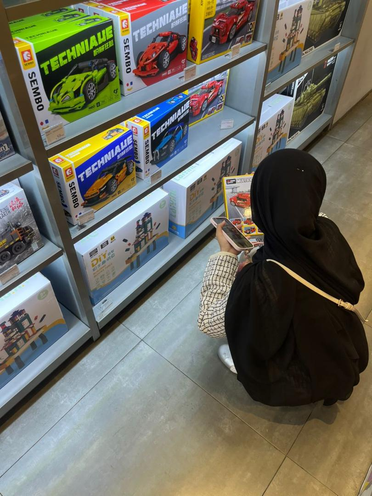
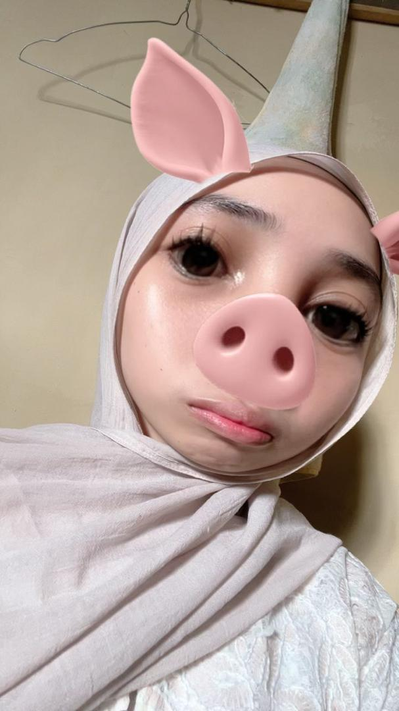
cihuy lanjut , sayang semangat ya kuliah nya apapun itu mesti dihadapi sebab sayang dah dewasa dan udah kuliah sayang tau mana betul mana salah bubby mau ingetin ini penting JAGA KESEHATAN sama UTAMAKAN ORANG TUA sebab dua ini paling mahal menurut bubby kalau bole sayang fikirkan dari sekarang pasal sakit sayang ke ortu bubby jujur ga tahan suda mau ngomong ke mama tapi bubby hormati sayang itu keputusan sayang kalau bole secepatnya sebab apapun itu semua butuh doa dari orang tua sayang bubby tau sayang berat mau bilang ke mereka sebab ini tapi coba sayang fikir sisi baiknya sayang mau sembuhkan biarpun orang tua tu marah dieawal and shock tapi itu memang tanggung jawab mereka sayang sebagai orang jadi sayang harus ada tanggung jawab juga sebagai anak bubby ga suka sayang buying time terus untuk keep dari ortu bubby rasa berat banget beban bubby pegang sekarang bubby mau sayang sembuh and ga sakit lagi ini bubby kasih sayang sadar kalau bisa sayang sadar okay sayanggg, terus kuliah sayang tau kan batasnya dari outfit sayang terus pergaulan sayang apalagi sama teman pandai pandai pilih teman jangan yang datang pas butuh ja jangan biasakan buatkan orang tugas kalau dorang mnta bantu okay gapap bantu tapi jangan buatkan gimana drng mau tau and pandai kalau selalu dibuatkan sayang terus okay sayang pentingin tugas sayang dulu baru drg kalau sayang rasa sayang sudah aman tugas atau apa" okay bole tolong drng bubby ga larang juga tapi ga suka ja tengok sayang selalu gitu okayyy hehehe